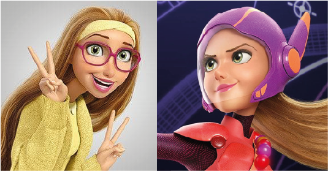

Relevamiento
Personaje: Honey Lemon

Personalidad
Es dulce, extrovertida, alegre, optimista, compasiva y protectora. Su pasión son la química y el arte. Es amante del peligro y experimentar cosas nuevas. Le encanta tomarse selfies con sus amigos cada vez que va a lugares o experimenta algo interesante. Además, es la persona del equipo que mantiene a todos sonriendo.
Aspecto físico
Es delgada y alta, ojos verdes y pelo rubio largo. Su estilo de ropa es de los años 60 y 70, que están en tonos de amarillo y rosa. Siempre necesita usar anteojos grandes.
Por otro lado en su forma de superhéroe, su traje es un vestido rosa, con mangas y calzas magenta oscuro, plataformas del mismo tono que el vestido, y una armadura roja. Usa un casco y colgado al hombro un bolso especial que puede mezclar diferentes elementos químicos, lo que le permite crear pelotas que usa como explosivos o trampas.
Referencias visuales
Contexto
Pelicula
El personaje Honey Lemon es parte de la película Grandes Héroes (Big Hero 6). Es una estudiante de ingeniería química en el Instituto de Tecnología de San Fransokyo. Ademas, es una artista, toma lecciones en el Instituto de Arte de San Fransokyo. Honey Lemon es parte del grupo Grandes Héroes. Compuesto por Hiro Hamada, Baymax, GoGo Tomago, Honey Lemon, Wasabi-no-ginger y Fred. Se unen para salvar, cada uno con su poder, su ciudad de el hombre Kabuki que robo los Microbots. Honey se encargaba de los componentes químicos y del estilo de los trajes.